⚡ ARC 1: 2ND QUARTER ⚡
ROGUE FILES: 19
CODENAME: UNIQUO

"Time is a game, and I'm always three moves ahead."
"Time is a game, and I'm always three moves ahead."
Hi! I'm Juan Uniquo M. De Asis, I'm a huge fan of DC Comics, especially The Flash! 🏃♂️💨
I'm 14 years old and was born on January 19, 2011, at Well Family Maternity Clinic in Las Piñas City. Ever since I was young, I've admired heroes who use their powers to protect others.
The Flash's speed, courage, and determination always push me to go further and stay ahead in life.
I enjoy reading comics, watching action-packed shows, and spending time with friends. Just like The Flash, I believe that no matter how fast life moves, it's important to keep running toward your goals. I also like doing sports, as they keep me physically active, because of that, I play many sports, like Basketball, Badminton and even Athletics, in which I got inspired to do because of me being a huge Flash fan, because, what does The Flash do? Run. 🌀⚡
"Sometimes you have to run before you can walk."
— Barry Allen (The Flash)
I come from a small but incredibly strong and loving family. I'm the only child of my father, and that has made our relationship even more meaningful. With no siblings, I've grown up learning the value of quality time, mutual respect, and understanding.
My parents are like my personal heroes, always ready to support me through anything. They might not have super speed like The Flash, but they have something even better: unconditional love, patience, and wisdom. They're the reason I stay grounded and motivated every day.
Even though our family may be small in number, we're big in heart. We celebrate simple moments, dinners, talks, laughs, and we always have each other's backs. Our bond is fast and unbreakable, just like lightning ⚡.
My whole family has shaped me into the person I am today, focused, determined, and always ready to run toward my dreams.
My friends are like my second family, the people I laugh with, learn from, and grow alongside. Whether we're working on school projects, playing games, or just talking about life, they bring energy and joy to my world.
One of the biggest parts of my friend life is a group I belong to called BLKNS (which stands for "Balkans"). It originally started as a small circle called BBBoys, but as more amazing people joined in, we evolved and became something even stronger, a team with real friendship and loyalty at its core. Just like Team Flash, every member brings something unique to the table, and together, we're unstoppable. ⚡🛡️
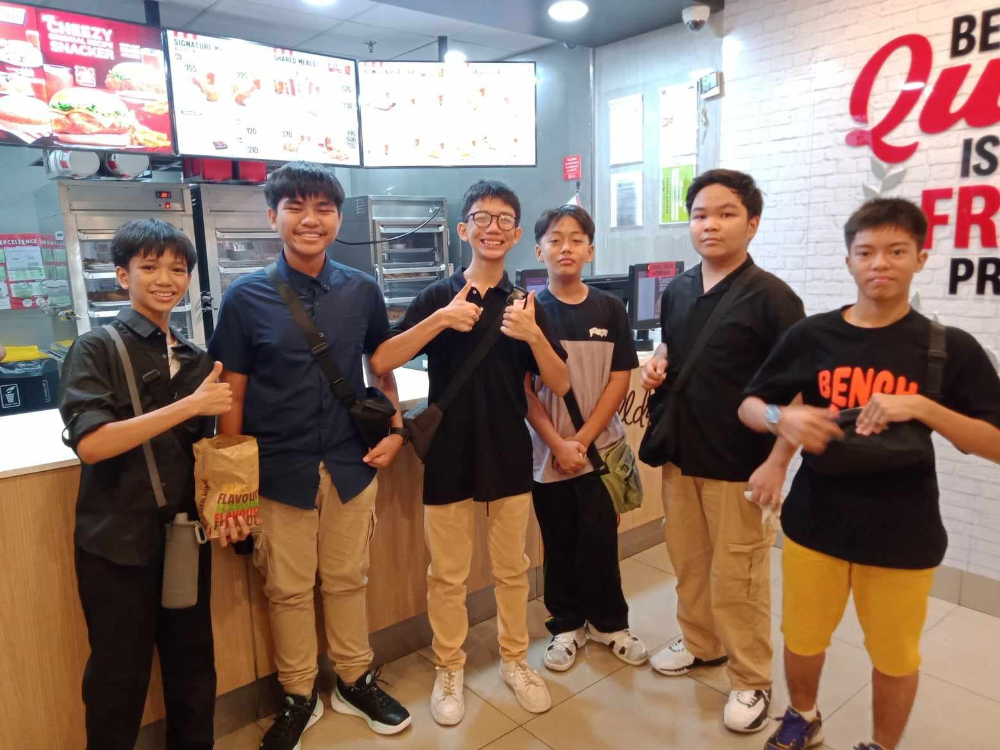
We share inside jokes, support each other during tough times, and always have each other's backs. It's more than just a group, it's a brotherhood built on trust and memories.
The HomoSapiens (Zepiens) is a circle of friends that started from the most unlikely of places: our classroom. We were once all classmates, sharing the same room and the same experiences. From the very first day, we clicked instantly, bonded over shared interests, humor, and our passion for thinking outside the box.
The Zepiens were formed in a room full of potential, where everyone brought something unique to the table. Whether it was our quirks, talents, or ideas, we were a group of dreamers who didn't just settle for the ordinary. We challenged each other, grew together, and became more than just classmates; we became a close-knit team, much like The Flash and his allies.
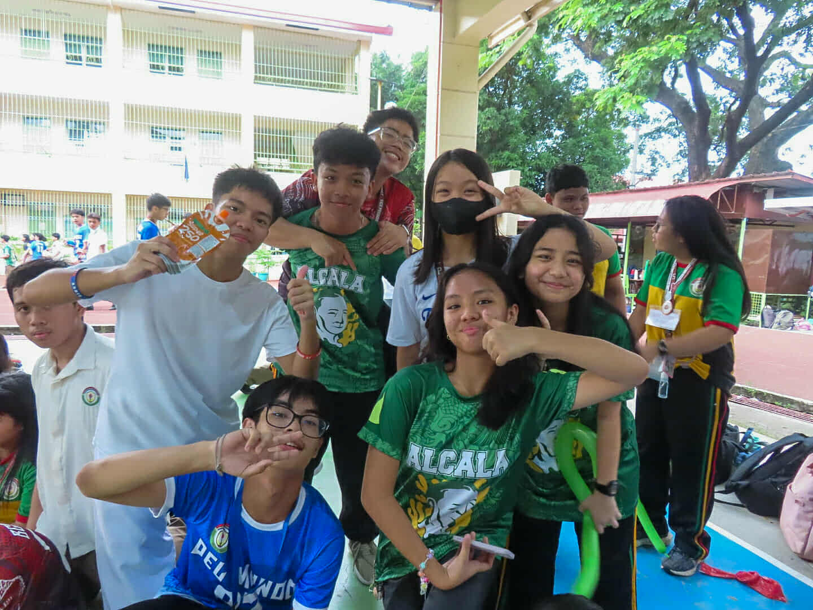
Even though we started in a classroom, our bond is far beyond school. We remain united by the friendship and creativity we nurtured during those days. We still meet up, share ideas, and support each other no matter where life takes us. The Zepiens are a reminder that some of the best teams are built from people who were once strangers, then became classmates, and hopefulle, lifelong friends.
CSS (Cascading Style Sheets) is used to style and design webpages by controlling how HTML elements appear.
It separates structure (HTML) from design (CSS), making websites easier to maintain, update, and beautify.
Benefits:
p { color: red; }
.highlight { background-color: yellow; }
CSS consists of rules that tell the browser how to style HTML elements. Each rule is made up of a selector and a declaration block.
CSS Rule Structure:
p, .class, #id){ } containing one or more declarationscolor: red;
p {
color: blue;
font-size: 18px;
}
{ } – curly braces group declarations for a selector: – separates property and value; – ends each declaration
The display property controls how an element appears on the page.
Common values include:
block: starts on a new lineinline: stays on the same linenone: hides the element div {
display: block;
width: 100%;
background-color: lightgray;
}
a {
display: inline;
color: blue;
}
.hidden {
display: none;
}
display property is essential in controlling the layout and behavior of HTML elements. Block-level elements create new lines, inline elements do not, and display set to none removes the element from the page layout entirely.
A CSS rule has two main parts: a selector, and one or more lists of style declarations.
Basic Format of a CSS Style Rule:
For Inline Style Rule:
<tag style="style declaration">
For Document-Level and External Style Sheets:
selector {style declarations}
Example:
p {
color: blue;
font-size: 18px;
}
Summary: CSS rules define how HTML elements should be styled. The basic structure consists of a selector and a declaration block. Each declaration defines a specific style for the selected element(s).
CSS selectors are used to "find" or "select" the HTML elements that you want to style.
CSS selectors are divided into six types:
The element selector selects HTML elements (like p, div, h1, etc.) and applies CSS to them.
The ID selector is used to style a unique element on the page, typically in cases such as page titles or navigation sections.
The universal selector selects every single HTML element on the page. It is represented by the * symbol.
The group selector allows you to select multiple elements and apply the same style to all of them.
The attribute selector selects elements based on specific attribute values. The syntax is Element[attribute].
CSS selectors are powerful tools to select and style specific HTML elements. Whether you're applying styles to a specific tag, using unique IDs, selecting elements by their attributes, or grouping multiple elements, CSS selectors provide flexibility and control in styling your webpage.
CSS can be used to manage dimensions such as visibility, width, height, and more for HTML elements.
CSS properties for dimensions include:
The visibility property determines if an element is visible or hidden, but it still takes up space in the layout.
visibility: visible – Default value, makes the element visible.visibility: hidden – Hides the element but it still occupies space.visibility: collapse – Only for table rows, columns, and flex items; effectively removes the element.Width and Height properties define the size of an element. You can set fixed dimensions or let the element resize automatically.
width: 200px – Sets the width of the element to 200px.height: auto – Sets the height to auto, based on content.Max-width, Min-width, Max-height, and Min-height properties are used to define the maximum or minimum size of an element.
max-width: 12px – Limits the width to 12px.min-width: 12px – Ensures the width is at least 12px.max-height: 12px – Limits the height to 12px.min-height: 12px – Ensures the height is at least 12px.CSS provides several ways to control the dimensions of elements on a webpage. By using properties like width, height, visibility, and their related properties, you can design flexible and responsive layouts.
Reflection Questions:
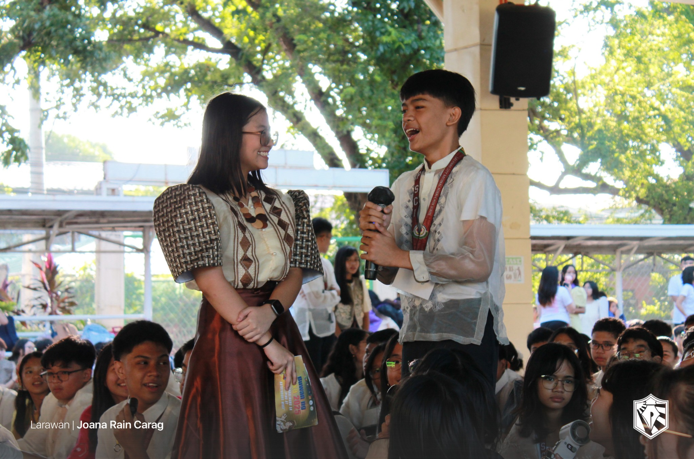
credits to: Ang Paham
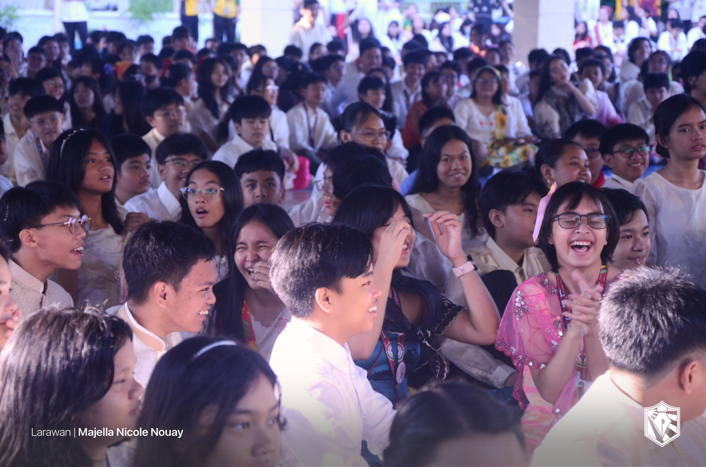
credits to: Ang Paham
credits to: Kiel Reyes
Reflection Questions:
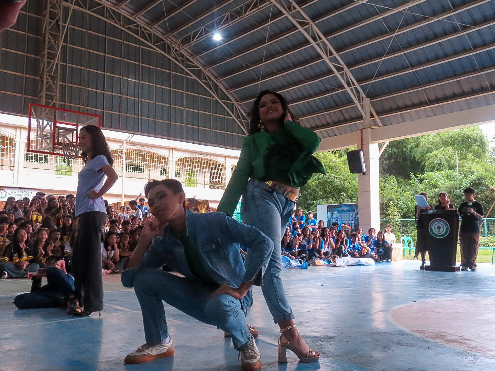
credits to: Jade Imperial
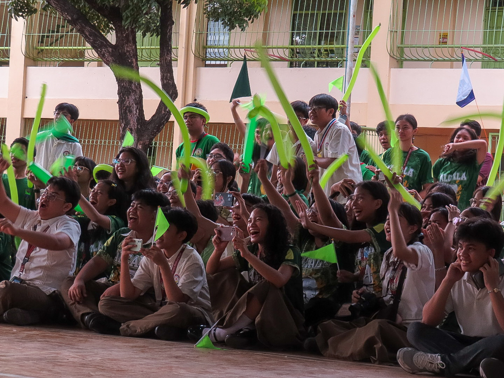
credits to: Jade Imperial
credits to: Nicole Kierulf
Reflection Questions:
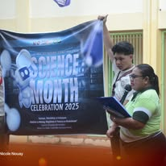
credits to: Ang Paham
credits to: Ang Paham
Reflection Questions:
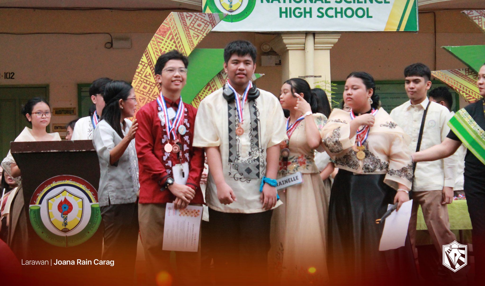
credits to: Ang Paham
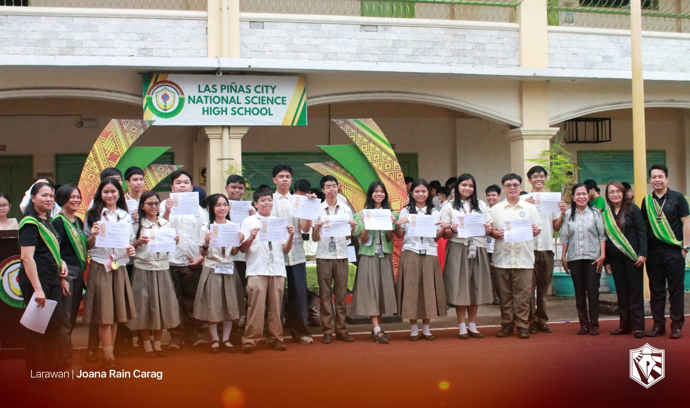
credits to: Ang Paham
credits to: Nicole Kierulf
Reflection Questions:
credits to: Ang Paham
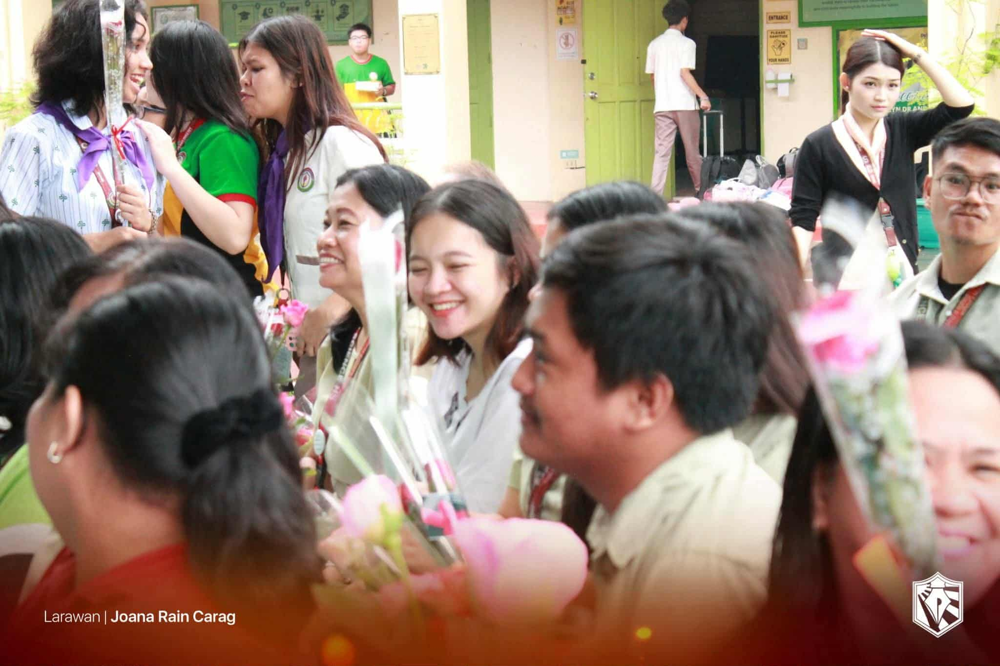
credits to: Ang Paham
credits to: GRADE 9 - FAITH!
Reflection Questions:

credits to: Ang Paham

credits to: Ang Paham
credits to: Nicole Kierulf
Deskripsyon: Ang demand ay ang dami ng produkto o serbisyo na kaya at handang bilhin ng mamimili sa isang tiyak na presyo.
Batas ng Demand (Ceteris Paribus): Kapag ang presyo ay tumaas, bababa ang demand. Kapag ang presyo ay bumaba, tataas ang demand.
Substitution Effect: Kapag ang presyo ng isang produkto ay tumaas, hahanap ang mamimili ng mas murang alternatibo.
Income Effect: Kapag tumaas ang presyo, parang lumiit ang kita ng mamimili kaya bumababa ang demand.
Mathematical Formula: Qd = a - bP
Demand Schedule: Talaan na nagpapakita ng presyo at quantity demanded.
Demand Function: Qd = f(P)
Demand Curve: Graph na pababa mula kaliwa-pakanan.
Mga Salik na Nakaaapekto: Kita, Panlasa, Populasyon, Ekspektasyon, Presyo ng kaugnay na produkto.
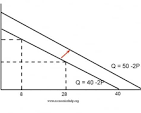
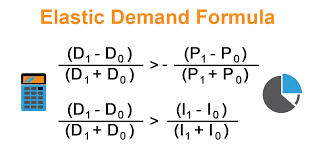
Deskripsyon: Dami ng produkto/serbisyo na kayang ipagbili ng producer sa tiyak na presyo.
Batas ng Supply: Kapag mataas ang presyo, tumataas ang supply; kapag mababa, bumababa ang supply.
Ceteris Paribus: Ipinapalagay na ang ibang salik ay hindi nagbabago.
Mathematical Formula: Qs = c + dP
Supply Schedule: Talaan ng presyo at quantity supplied.
Supply Function: Qs = f(P)
Supply Curve: Graph na pataas mula kaliwa-pakanan.
Mga Salik na Nakaaapekto: Teknolohiya, Gastos, Ekspektasyon, Bilang ng nagbebenta.
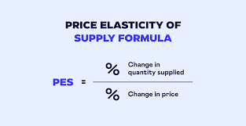
Deskripsyon: Sukatan kung gaano ka-sensitibo ang demand sa pagbabago ng presyo.
Elasticity ng Demand (ED): ED = % pagbabago sa Qd / % pagbabago sa presyo
Uri ng Elastisidad:
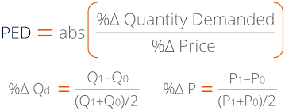
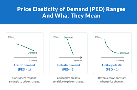
Deskripsyon: Punto kung saan nagtatagpo ang demand at supply sa isang presyo at quantity.
Equilibrium Price: Presyong nagbabalanse sa dami ng demand at suplay.
Equilibrium Quantity: Dami ng produkto na nais bilhin at ibenta sa equilibrium price.
Shortage: Kapag mas mataas ang demand kaysa supply.
Surplus: Kapag mas mataas ang supply kaysa demand.
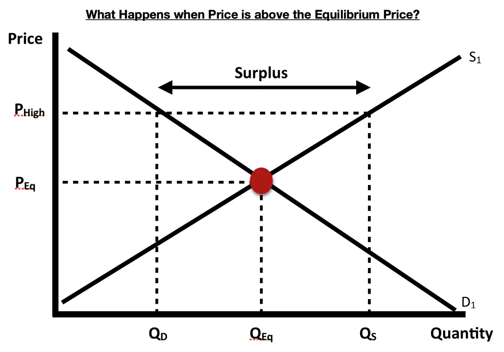

Deskripsyon: Uri ng pamilihan ayon sa bilang ng producer at katangian ng produkto.
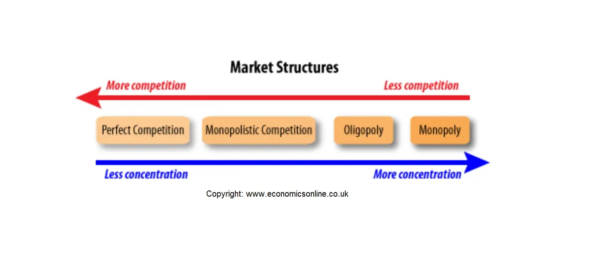
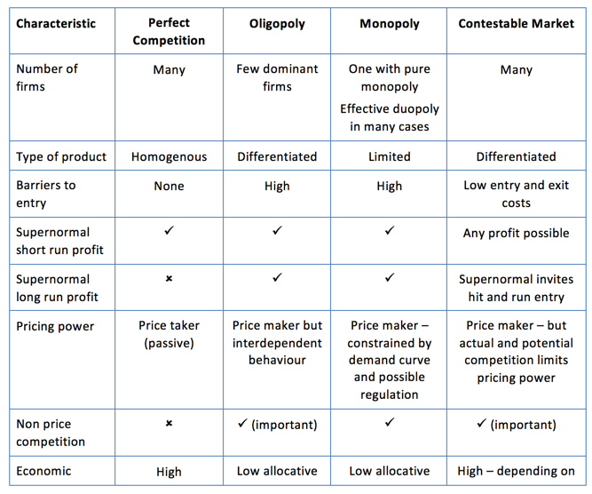
Deskripsyon: Layunin ng pamahalaan na mapanatili ang balanse sa ekonomiya sa pamamagitan ng regulasyon.
Price Control: Pagkontrol ng pamahalaan sa presyo ng mga produkto upang hindi ito magmahal nang sobra.
RA 7581: Price Act na naglalayong protektahan ang mamimili laban sa pananamantala sa presyo.
Price Ceiling: Pinakamataas na presyong maaaring singilin.
Price Support: Suportang presyo para sa mga prodyuser.
Floor Price: Pinakamababang presyong pinapayagan sa isang produkto.
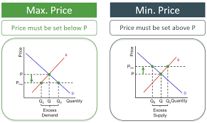
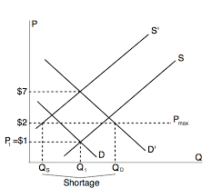